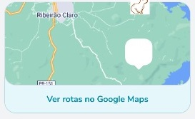
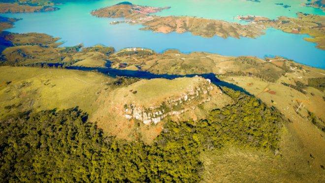

Você é, ou deseja se tornar um aventureiro? Então, venha conhcer nosso app!
Paisagens Naturais
Cachoeiras
Trilhas
**Instruções sobre a rota**
Morro do Gavião é uma formação rochosa localizada em uma propriedade particular no município de Ribeirão Claro, no norte do estado do Paraná.
Somos um app que visa solucionar uma grande deficiência de conhecimento e potencial econômico ao mesmo tempo que promove a preservação ecológica e o espírito de reconstrução da flora. Em nosso país mas principalmente em nossa região de localização (vale do paranapanema) existe um imenso potencial econômico ligado ao turismo rural e ecológico, o problema é que normalmente as trilhas, fazendas, cachoeiras, clareiras e campings são desconhecidos a grande maioria das pessoas da região e as poucas pessoas que conhecem não sabem como podem fazer uso dos recursos sem agredir o meio-ambiente, muito menos como eles podem ajudar a melhorar e aumentar a fauna daquele ambiente.
Nosso aplicativo traz soluções exatamente nesse sentido. Queremos promover uma socialização dos pontos turísticos com uma pequena rede social voltada a preservação e educação ecológica, onde nossos usuários vão conseguir encontrar atrações que lhes agradem, podendo reviver as experiências e avaliações das pessoas anteriores baseadas na localização do mapa, promovendo assim uma maior segurança do visitante como por exemplo avisos de profundidade de cachoeiras ou a presença de animais peçonhentos, mas principalmente os educando para uma mentalidade ecologicamente correta, como orientação sobre o não uso ou destinação correta dos resíduos mas melhor do que isso ensinando quais os tipos de árvores e plantas que eles podem levar para plantar no local e os incentivando a partir de uma gamificação da visita com pontuação extra para quem tem o nosso selo ecológico.